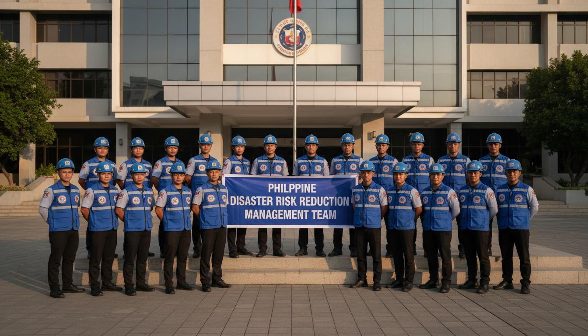

Toledo City
City Disaster Risk Reduction and Management
Committed to building a resilient Toledo City
The Toledo City Disaster Risk Reduction and Management Office (CDRRMO) was established in accordance with Republic Act 10121, also known as the Philippine Disaster Risk Reduction and Management Act of 2010. Since its inception, the office has been at the forefront of disaster preparedness, response, and recovery efforts for all 38 barangays of Toledo City.
To build a safer, adaptive, and disaster-resilient Toledo City through proactive risk reduction, timely emergency response, and sustainable community preparedness programs that protect lives, livelihoods, and the environment.
A Toledo City where every community is empowered, resilient, and capable of withstanding and recovering from all forms of disasters through effective governance, active partnerships, and a culture of preparedness.
Upholding ethical standards
Excellence in service
Anticipating risks
Serving with empathy
The Toledo City CDRRMO provides comprehensive disaster risk reduction and management services to all 38 barangays of Toledo City, ensuring no community is left behind in our quest for resilience.

Milestones in our journey towards a resilient Toledo City.
Typhoon Odette 2021 - Through effective pre-emptive evacuation and response
Region VII 2022 - Recognized for outstanding disaster risk management
All 38 barangays with active disaster preparedness programs
Trained QRT teams established in all barangays city-wide
Reach us during office hours or call emergency numbers 24/7.
Toledo City Hall Complex, Poblacion, Toledo City, Cebu
Monday - Friday, 8:00 AM - 5:00 PM
Emergency response operations available 24/7
| Service | Hotline |
|---|---|
| CDRRMO | (032) 123-4567 |
| Police | 117 |
| Fire | 160 |
| Hospital | (032) 123-4570 |
| DSWD | (032) 123-4571 |
| Emergency | 911 |